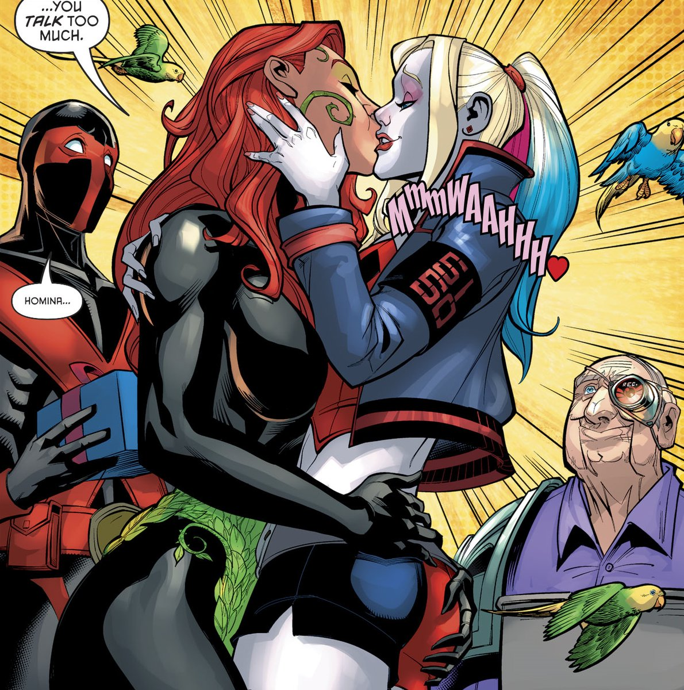

About Harley Quinn
Harley Quinn, originally wasn't supposed to be a recurring character within Batman's DC Universe, but due to popular demand she was brought back. Initially the character was the Jokers henchman/girlfriend, but thankfully this has changed over the years. Now when one delves in to the character, you'll find that she's more than just the Jokers girlfriend.
There's more to Harley Quinn than you think...
Harley Quinns Characteristics/ Facts
- Before joining the Joker, Harley was a respected therapist
- Harley Quinn is an Olympic-level athlete with excellent gymnastics skills rivaling that of Catwoman and Nightwing
- Her look has changed many times since her 1st appearance in Batman: The Animated Series episode “Joker’s Favor”
- After a failed attempt by the Joker to blow her up in a rocket, Poison Ivy gave her a strange “potion”, which gave Harley an immunity to most poisons and toxins, enhanced strength, agility, and speed, and a small healing factor
- Harley Quinn joins forces with Poison Ivy and Catwoman in the series Gotham City Sirens.
Harley Quinn and Poison Ivy
Up until recently, Harley Quinn and Poison Ivy weren’t considered an iconic power couple in the DC Universe, though there's been non-stop speculation. Over the years the two have been known to share their thoughts and feelings toward each other with some obvious tension and winks to the reader. From their first appearance together in the Batman: The Animated Series episode “Holiday Knights,” kidnapping Bruce Wayne and going on a shopping spree with the billionaire’s uncapped credit cards, the two have clicked. Since then, the friendship has blossomed into romance... according to those who have read every step (and between the lines) along the way. Click on the links below for more information:
- Holiday Knights
- Gotham City Sirens
- Jail Break